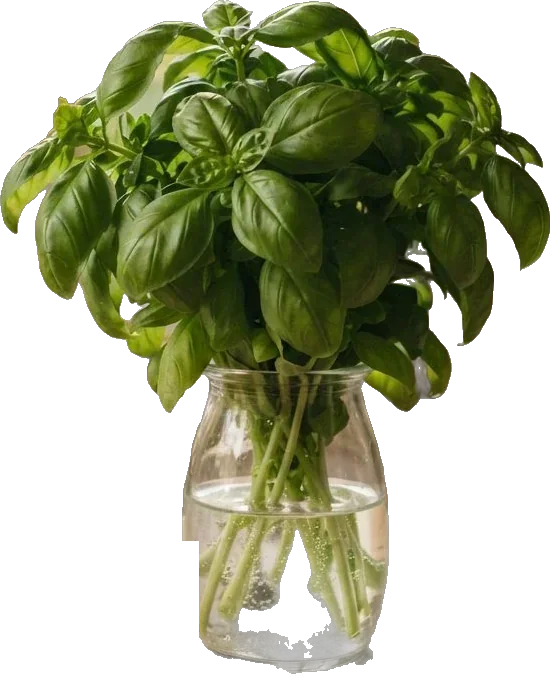

Ogni mattina, dalle 6
Scegliamo la frutta di stagione
Sul banco arriva solo quello che è al punto giusto: cachi, melagrane, castagne, uva.

Sul banco arriva solo quello che è al punto giusto: cachi, melagrane, castagne, uva.
Zucca a cubetti, minestrone pronto, frutta sbucciata in vaschetta. Tu la trovi già fatta.
Scrivi cosa ti serve e dove sei. Consegniamo a Galatina e nei paesi vicini.
Ordina al 342 753 2905Intera, a spicchi o già a cubetti.
Maturi al punto giusto, anche in vaschetta.
In mazzi freschi ogni mattina.
Idee semplici con quello che è di stagione. Ne pubblichiamo una al giorno su Instagram.


Via Festa del Lavoro 14
73013 Galatina (LE)
Per ordinare e per la consegna a casa, un solo numero WhatsApp: 342 753 2905.
IndicazioniScrivi su WhatsApp cosa ti serve e dove sei. Ti rispondiamo noi, senza app e senza registrazioni, e te la portiamo a casa.
Ordina al 342 753 2905